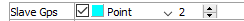
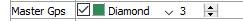
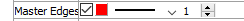
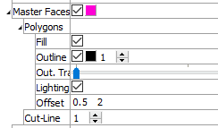
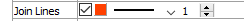

连接条件绘图项
说明
显示当前连接条件的摘要。从属网格点、主网格点、主边和主面均以不同颜色渲染。对于主、从在空间上不重合（即关闭捕捉）的情况，将绘制一条连接两者的线。
属性
从属网格点（Slave Gps） 主网格点（Master Gps） 主边（Master Edges） 主面（Master Faces） 连接线（Join Lines） 映射（Map） 变形系数（Def-Fac） 透明度（Transparency） 图例（Legend）
从属网格点

指定从属网格点的渲染方式。
从属网格点：显示（勾选）从属网格点，并提供用于颜色（色板）、形状（从点、立方体、菱形、金字塔、沙漏、十字、球体中选择）和尺寸的附加控件。
主网格点

指定主网格点的渲染方式。
主网格点：显示（勾选）从属网格点，并提供用于颜色（色板）、形状（从点、立方体、菱形、金字塔、沙漏、十字、球体中选择）和尺寸的附加控件。
主边

指定主边的渲染方式。
主边：显示（勾选）从属网格点，并提供用于颜色（色板）、线型和尺寸的附加控件。
主面

指定主面的渲染方式。
主面：显示（勾选）主面，并提供用于指定颜色（色板）的附加控件。
多边形：用于控制构成该面的多边形的控件容器。这些控件的操作与 通用“面片”控件（common “Facet” controls）中的 多边形 容器完全相同。
连接线

指定连接线的渲染方式。
连接线：显示（勾选）连接线，并提供用于颜色（色板）、线型和尺寸的附加控件。
映射

将该项映射到新的模型坐标。详情请参见标准的 映射（map） 控件说明。
变形系数

设置变形系数。详情请参见标准的 变形系数（def-fac） 控件说明。
透明度

设置绘图项的透明度。详情请参见标准的 透明度（transparency） 控件说明。

图例
设置绘图图例中该项目的标签。详情请参见标准的 图例（legend） 控件说明。在 标题 下方，连接条件绘图项还在 图例 中为 颜色列表、映射 和 变形系数 提供控件。
| 这些内容对您有帮助吗？… | FLAC3D © 2019, Itasca | 原文更新于 2020 年 10 月 8 日 |